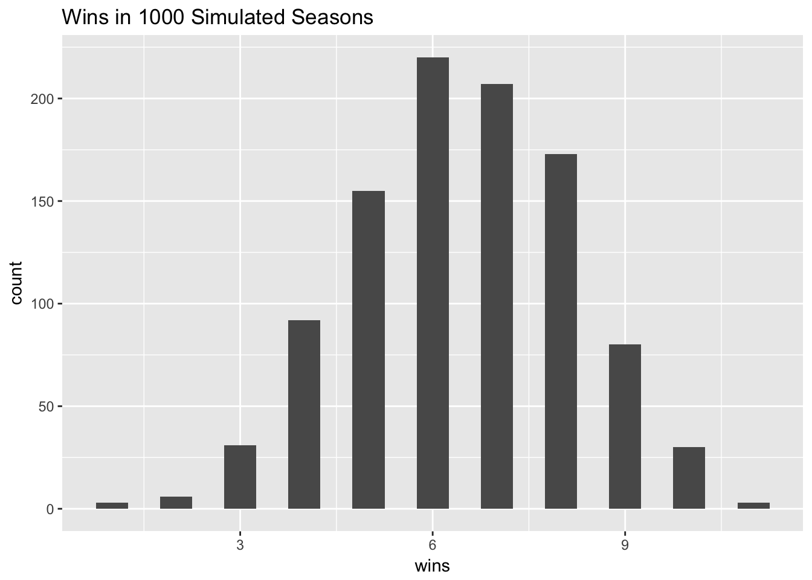

The regular fantasy football season just finished, and as usual, my team underperformed. I had the 3rd most points in the league and finished 7 out of 8 teams with a record of 4-8. I wondered what were the chances of such a bad record. This called for a simulation!
Methods
I transcribed all the scores for each game into a spreadsheet and loaded it into R.
library(dplyr)##
## Attaching package: 'dplyr'## The following objects are masked from 'package:stats':
##
## filter, lag## The following objects are masked from 'package:base':
##
## intersect, setdiff, setequal, uniondat <- read.csv("../datasets/scores.csv")
dat <- tbl_df(dat)Here were the mean weekly scores and standard deviations for each team. My team name was the Apple Dumpling Gang (ADG), after a silly Disney movie from the 1970s.
score_lookup <- dat %>% group_by(Team) %>% summarize(score_avg = mean(Score), score_sd = sd(Score)) %>% arrange(desc(score_avg))
score_lookup## # A tibble: 8 × 3
## Team score_avg score_sd
## <fctr> <dbl> <dbl>
## 1 Y 180.3250 17.74445
## 2 SJSL 172.7833 26.34011
## 3 ADG 171.7917 21.20478
## 4 CL 171.1667 26.15525
## 5 SPT 167.0250 31.85901
## 6 ADK 166.5167 29.84861
## 7 MAX 164.7083 28.16637
## 8 SOTT 156.7833 21.03097# For a possible future analysis, I added a variable to assign a game number to each
# weekly matchup
# dat %>% bind_cols(data.frame(game = rep(1:(nrow(dat)/2), each = 2)))Now for the simulation part. I wrote the function below that takes a team name and looks up its scoring average and standard deviation. It then returns a random score based on a t-distribution with 11 degrees of freedom.
rscore <- function(team_to_lookup) {
team_lookup_row <- which(score_lookup$Team == team_to_lookup)
team_avg <- score_lookup$score_avg[team_lookup_row]
team_sd <- score_lookup$score_sd[team_lookup_row]
return(rt(1, 11) * team_sd + team_avg)
}Here was my team’s schedule this year. Because there were only 8 teams and a 12 week schedule, I had to play 4 teams twice. Of course these were the #1, 2, 4 and 5 top scoring teams (#3 was me).
schedule <- c("SPT", "CL", "SJSL", "SOTT", "Y", "MAX", "ADK", "SPT", "CL", "SJSL", "SOTT", "Y")I wrote a function that generated 12 weeks of scores for my team, applied the random score generation function to my season’s opponents, and then took the difference. The function returns the number of games that I won in this simulated season.
ADGscores <- rep(NA, 12)
season_sim <- function() {
for(i in 1:12) ADGscores[i] <- rscore("ADG")
season_results <- ADGscores - sapply(schedule, rscore)
return(sum(season_results > 0))
}Results
Here are the results for a single season.
set.seed(1)
season_sim()## [1] 7Seven wins! Not bad! That would have made the playoffs this year. But that’s just one season, let’s try a thousand.
set.seed(2)
sim_results <- sapply(1:1000, function(x) season_sim())
table(sim_results)## sim_results
## 1 2 3 4 5 6 7 8 9 10 11
## 3 6 31 92 155 220 207 173 80 30 3In this simulation, I won 4 or fewer games in 132 seasons, or 13.2% of seasons. So while finishing 4-8 was unlucky, it really wasn’t that unusual.
Here’s a histogram of the distribution.
library(ggplot2)
ggplot(data.frame(sim_results), aes(x = sim_results)) +
geom_histogram(binwidth=.5) +
xlab("wins") + ggtitle("Wins in 1000 Simulated Seasons")
Discussion
I was unfortunate to win only 4 games this year, but this happened on average about 1 every 7.5 times the season simulation was run. It’s not that different than rolling a die and having it come up with a 4.
There are lots of limitations with this kind of analysis. First the teams are in flux every week as managers add and drop players. So the SPT team that I played in week 1 was really not the same as the SPT team I played in week 8. Sometimes the teams would get better because they added a hot free agent. Sometimes they would be worse because their #1 draft pick (like mine) would have gone down with a torn meniscus. It is difficult to tell which direction this bias could have gone in, but in any case it does not seem immediately obvious to me that team scores went up as the season went on.
Second, there are NFL bye weeks that affect the rosters from week to week. On average, bye weeks should reduce the fantasy scoring for each team as fantasy starters are replaced by fill-ins. However, every team was subject to these effects over the course of the season. The bye weeks concluded in week 12 coincidentally with the end of our regular season, so no team was clearly disadvantaged more than any other.
Future work could be to go back and simulate every game of the season and find out the records and standings. I could also simulate the playoffs based on that and see how likely it would be for me to win a championship with this team.
Conclusion
I was unlucky to finish with the record that I had, but that’s just fantasy football.
Note
If you think that no one should care about my fantasy team, I would agree with you. No one cares about anyone else’s fantasy team. I hope the strategy of simulating a fantasy football season based on the scores might be of interest.